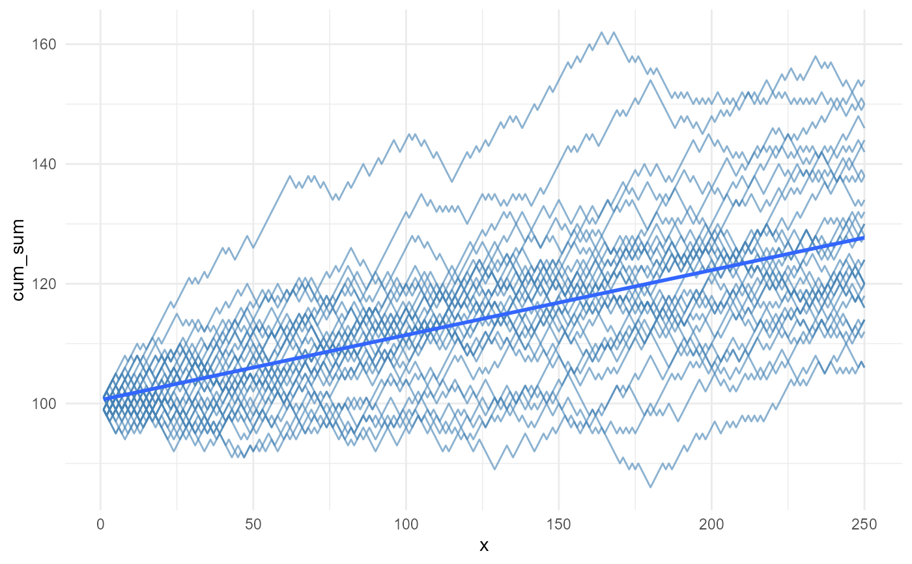

The discrete_walk function generates multiple random walks over discrete time periods.
Each step in the walk is determined by a probabilistic sample from specified upper and lower bounds.
This function is useful for simulating stochastic processes, such as stock price movements or
other scenarios where outcomes are determined by a random process.
Usage
discrete_walk(
.num_walks = 25,
.n = 100,
.upper_bound = 1,
.lower_bound = -1,
.upper_probability = 0.5,
.initial_value = 100
)Arguments
- .num_walks
Total number of simulations.
- .n
Total time of the simulation.
- .upper_bound
The upper bound of the random walk.
- .lower_bound
The lower bound of the random walk.
- .upper_probability
The probability of the upper bound. Default is 0.5. The lower bound is calculated as 1 - .upper_probability.
- .initial_value
The initial value of the random walk. Default is 100.
Value
A tibble containing the simulated walks, with columns for the walk number, time period, and various cumulative metrics (sum, product, min, max).
Details
The function discrete_walk simulates random walks for a specified number of simulations
(.num_walks) over a given total time (.n). Each step in the walk is either the upper
bound or the lower bound, determined by a probability (.upper_probability). The initial
value of the walk is set by the user (.initial_value), and the cumulative sum, product,
minimum, and maximum of the steps are calculated for each walk. The results are returned
in a tibble with detailed attributes, including the parameters used for the simulation.
See also
Other Generator Functions:
brownian_motion(),
geometric_brownian_motion(),
random_normal_drift_walk(),
random_normal_walk()
Examples
library(ggplot2)
set.seed(123)
discrete_walk()
#> # A tibble: 2,500 × 8
#> walk_number x y cum_sum cum_prod cum_min cum_max cum_mean
#> <fct> <int> <dbl> <dbl> <dbl> <dbl> <dbl> <dbl>
#> 1 1 1 -1 99 0 99 99 99
#> 2 1 2 1 100 0 99 101 100
#> 3 1 3 -1 99 0 99 101 99.7
#> 4 1 4 1 100 0 99 101 100
#> 5 1 5 1 101 0 99 101 100.
#> 6 1 6 -1 100 0 99 101 100
#> 7 1 7 1 101 0 99 101 100.
#> 8 1 8 1 102 0 99 101 100.
#> 9 1 9 1 103 0 99 101 100.
#> 10 1 10 -1 102 0 99 101 100.
#> # ℹ 2,490 more rows
set.seed(123)
discrete_walk(.num_walks = 10, .n = 250, .upper_probability = 0.51,
.initial_value = 100) |>
visualize_walks()
